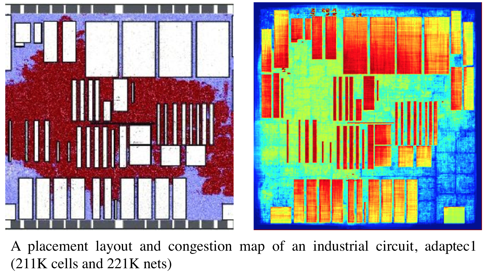
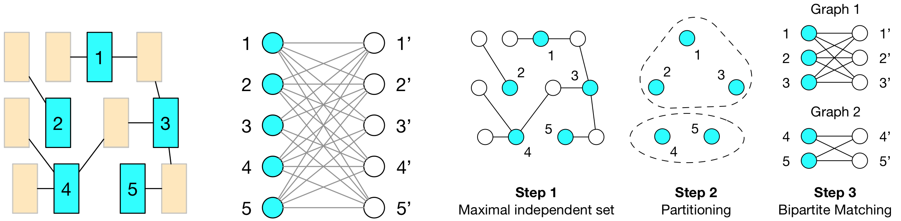
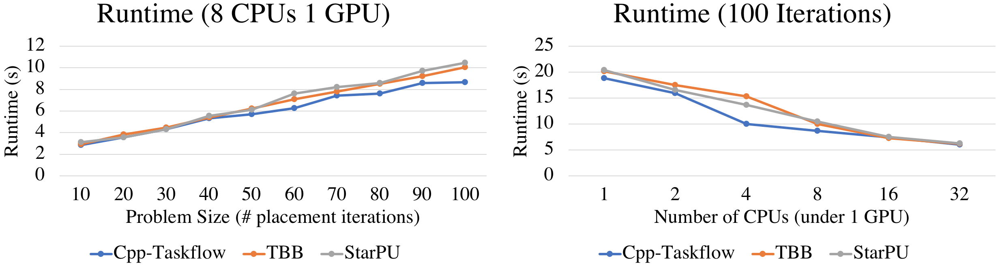
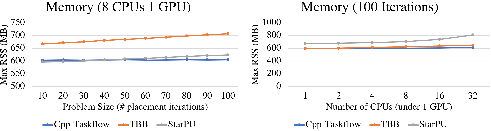
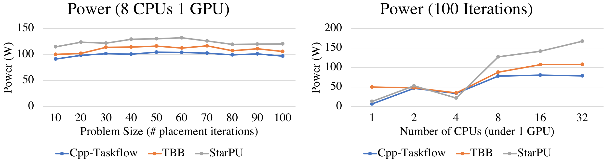
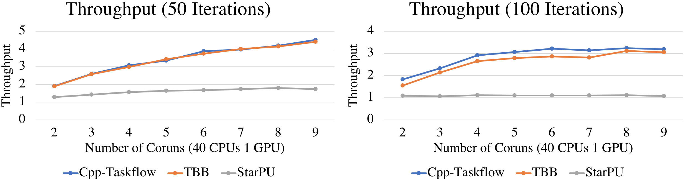

We applied Taskflow to solve a VLSI placement problem. The goal is to determine the physical locations of cells (logic gates) in a fixed layout region using minimal interconnect wirelength.
Placement is an important step in the layout generation stage of a circuit design. It places each cell of synthesized netlists in a region and optimizes their interconnect. The following figure shows a placement layout of an industrial design, adaptec1.

Modern placement typically incorporates hundreds of millions of cells and takes several hours to finish. To reduce the long runtime, recent work started investigating new CPU-GPU algorithms. We consider matching-based hybrid CPU-GPU placement refinement algorithm developed by DREAMPlace. The algorithm iterates the following:
Each iteration contains overlapped CPU and GPU tasks with nested conditions to decide the convergence.

We implemented the hybrid CPU-GPU placement algorithm using Taskflow, Intel TBB, and StarPU. The algorithm is crafted on one GPU and many CPUs. Since TBB and StarPU have no support for nested conditions, we unroll their task graphs across fixed-length iterations found in hindsight. The figure below shows a partial taskflow of 4 cudaFlows, 1 conditioned cycle, and 12 static tasks for one placement iteration.
The table below lists the programming effort of each method, measured by SLOCCount. Taskflow outperforms TBB and StarPU in all aspects. The whole program is about 1.5x and 1.7x less complex than that of TBB and StarPU, respectively.
| Method | Lines of Code | Number of Tokens | Cyclomatic Complexity | Cost |
|---|---|---|---|---|
| Taskflow | 677 | 4180 | 53 | $15,054 |
| TBB | 1000 | 6415 | 78 | $21,736 |
| StarPU | 1279 | 8136 | 90 | $29,686 |
Using 8 CPUs and 1 GPU, Taskflow is consistently faster than others across all problem sizes (placement iterations). The gap becomes clear at large problem size; at 100 iterations, Taskflow is 17% faster than TBB and StarPU. We observed similar results using other CPU numbers. Performance saturates at about 16 CPUs, primarily due to the inherent irregularity of the placement algorithm.

The memory footprint shows the benefit of our conditional tasking. We keep nearly no growth of memory when the problem size increases, whereas StarPU and TBB grow linearly due to unrolled task graphs. At a vertical scale, increasing the number of CPUs bumps up the memory usage of all methods, but the growth rate of Taskflow is much slower than the others.

In terms of energy, our scheduler is very power efficient in completing the placement workload, regardless of problem sizes and CPU numbers. Beyond 16 CPUs where performance saturates, our system does not suffer from increasing power as StarPU, due to our adaptive task scheduling algorithm.

For irregular task graphs akin to this placement workload, resource utilization is critical to the system throughput. We corun the same program by up to nine processes that compete for 40 CPUs and 1 GPU. Corunning a placement program is very common for searching the best parameters for an algorithm. We plot the throughput using weighted speed-up across nine coruns at two problem sizes. Both Taskflow and TBB achieve higher throughput than StarPU. At the largest problem size, Taskflow outperforms TBB and StarPU across all coruns.

We have observed two significant benefits of Taskflow over existing programming systems. The first benefit is our conditional tasking. Condition tasks encode control-flow decisions directly in a cyclic task graph rather than unrolling it statically across iterations, saving a lot of memory usage. The second benefit is our runtime scheduler. Our scheduler is able to adapt the number of worker threads to available task parallelism at any time during the graph execution, providing improved performance, power efficiency, and system throughput.